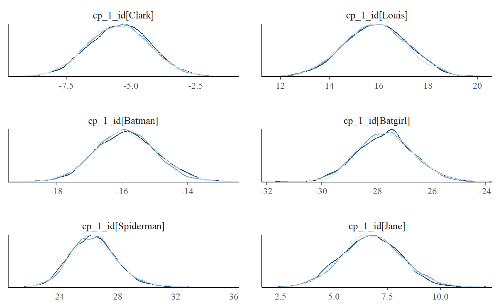

A unique feature of mcp is modeling change points as varying effects (sometimes called “random effects”). This has the advantage that you can let the change point vary by a factor while keeping other parameters common across varying factor levels.
This article in brief:
- How to simulate varying change points
- Get posteriors using
ranef(fit) - Plot using
plot(fit, facet_by="my_group")andplot_pars(fit, pars = "varying", type = "dens_overlay", ncol = 3). - The default priors restrict varying change points to lie between the two adjacent change points.
- The article on modeling variance via
sigma()contains an example on varying change points as well.
Specifying varying change points
You specify varying effects using the classical lmer syntax (1|group). Currently (v. 0.1) mcp only support varying intercepts. For example, here we model a varying change point between a plateau and a joined slope:
model = list( y ~ 1, # int_1 1 + (1|id) ~ 0 + x # cp_1, cp_1_sd, cp_1_id[i] )
You can have multiple varying change points with multiple groupings:
model = list( y ~ 1, # int_1 1 + (1|id) ~ 0 + x, # cp_1, cp_1_sd, cp_1_id[i] 1 + (1|species) ~ 0, # cp_2, cp_2_sd, cp_2_species[i] (1|id) ~ 1 # cp_3 (implicit), cp_3_sd, cp_3_id[i] )
Here are some properties of the change point varying effects:
Zero centered: The varying effects are zero-centered around the associated group-level change point. In other words, the sum of all varying effects are exactly zero. This constraint is necessary for the parameters to be identifiable.
Hierarchical: Consider the first change point, cp_1, and it’s associated varying effects, cp_1_id. By default, it is modeled as sampled from (nested within) the group-level change point, cp_1, as well as a spread, cp_1_sd.
Constraints: The varying effects are constrained to lie (1) in the observed range of the x-axis, and/or (2) between the two adjacent change points. That is, all cp_1_id are between min(x) and cp_2. All cp_2_species are between cp_1 and cp_3 and all cp_3_id are between cp_2 and max(x). These constraints are enforced through truncation of the default prior (fit$prior) and you can override them by specifying a manual prior (see vignette(“priors”)).
Simulating varying effects
Let us do a worked example, simulating the varying change point between a plateau and a slope:
model = list( y ~ 1, # int_1 1 + (1|id) ~ 0 + x # cp_1, cp_1_sd, cp_1_id[i] )
It is quite similar to simulating non-varying data, except that we need to simulate some varying offsets before passing all parameters to empty$simulate:
empty = mcp(model, sample = FALSE) library(dplyr, warn.conflicts = FALSE) varying = c("Clark", "Louis", "Batman", "Batgirl", "Spiderman", "Jane") df = data.frame( x = runif(length(varying) * 30, 0, 100), # 30 data points for each id = rep(varying, each = 30) # the group names ) df$id_numeric = as.numeric(as.factor(df$id)) # to positive integers df$y = empty$simulate(df$x, # Population-level: int_1 = 20, x_2 = 0.5, cp_1 = 50, sigma = 2, # Varying: zero-centered and 10 between each level cp_1_id = 10 * (df$id_numeric - mean(df$id_numeric))) head(df)
## x id id_numeric y
## 1 91.48060 Clark 3 46.02453
## 2 93.70754 Clark 3 43.40142
## 3 28.61395 Clark 3 21.30070
## 4 83.04476 Clark 3 41.80460
## 5 64.17455 Clark 3 27.36570
## 6 51.90959 Clark 3 21.73321Here, we “translated” the id to an offset on the x-axis by multiplying with 10. We subtracted the mean to make the varying effects zero-centered around cp_1. The result:
library(ggplot2) ggplot(df, aes(x=x, y=y)) + geom_point() + facet_wrap(~id)

Summarise and plot varying effects.
Fitting the model is simple:
fit = mcp(model, data = df)
If we just use plot(fit), we would see all points in one plot. We want to facet by id, so:
plot(fit, facet_by = "id", ncol = 3)

It seems that mcp did a good job of recovering the change points. There is a lot of information in this data, since the intercept and the slope on each side of the (varying) change point is shared between participants here.
If you use summary(fit) (or fixef(fit)) you will get the posteriors for the population-level effects. To get the random effects, do:
ranef(fit)
## name match sim mean lower upper Rhat n.eff
## 1 cp_1_id[Batgirl] OK -25 -24.658731 -26.342381 -23.014957 1.000113 5213
## 2 cp_1_id[Batman] OK -15 -15.411302 -17.128470 -13.727827 1.000123 5602
## 3 cp_1_id[Clark] OK -5 -5.600605 -7.134976 -4.010647 1.000724 6350
## 4 cp_1_id[Jane] OK 5 5.389034 3.417935 7.320762 1.001900 2140
## 5 cp_1_id[Louis] OK 15 16.180264 14.221617 18.179095 1.000008 2828
## 6 cp_1_id[Spiderman] OK 25 24.101341 22.009869 26.263599 1.002232 5850Inspecting the sim and match columns, we see that they recovered the simulation parameters well.
Good convergence is not always as obvious as in this example. While plot_pars(fit) show population-level parameters only, you can do this to get varying effects only:
plot_pars(fit, pars = "varying", type = "trace", ncol = 3)

Notice the use of the ncol argument to set the number of columns. You will often have many levels on your varying effect, so this is useful to get a good view of all of them. Naturally, you can do this for almost all kinds of plots.
Using pars = "varying" will plot all varying effects. This may be too much if you have multiple varying effects. To select just one, use regular expression in regex_pars. Two very handy operators are “^” (begins with) and “$” (ends with). Just to show that this “faceting” works for almost all of the many plot types, we now do two columns of "dens_overlay:
plot_pars(fit, regex_pars = "^cp_1_id", type = "dens_overlay", ncol = 2)

You can also do posterior predictive checking with facets. I think that for the relatively univariate models supported as of mcp 0.3, this does not add much new information over and above plot(fit, facet_by = "id"), but it’s a standard assessment that many will be acquainted with:
pp_check(fit, facet_by = "id")

Priors for varying effects
You can see the priors of the model like this:
cbind(fit$prior)
## [,1]
## cp_1 "dunif(MINX, MAXX)"
## cp_1_sd "dnorm(0, 2 * (MAXX - MINX) / N_CP) T(0, )"
## cp_1_id "dnorm(0, cp_1_sd) T(MINX - cp_1, MAXX - cp_1)"
## int_1 "dt(0, 3 * SDY, 3)"
## x_2 "dt(0, SDY / (MAXX - MINX), 3)"
## sigma_1 "dnorm(0, SDY) T(0, )"The priors cp_1_sd is the population-level standard deviation of cp_1_id, the latter of which is applied to all levels of id. This is also apparent if you inspect the JAGS code for this model. The truncation of varying effects is quite contrived, but just keeps them between the two adjacent (population-level) change points.
JAGS code
Here is the JAGS code for the model used in this article:
cat(fit$jags_code)
##
## model {
##
## # Priors for population-level effects
## cp_0 = MINX # mcp helper value.
## cp_2 = MAXX # mcp helper value.
##
## cp_1 ~ dunif(MINX, MAXX)
## cp_1_sd ~ dnorm(0, 1/(2*(MAXX-MINX)/N_CP)^2) T(0, )
## int_1 ~ dt(0, 1/(3*SDY)^2, 3)
## x_2 ~ dt(0, 1/(SDY/(MAXX-MINX))^2, 3)
## sigma_1 ~ dnorm(0, 1/(SDY)^2) T(0, )
##
## # Priors for varying effects
## for (id_ in 1:n_unique_id) {
## cp_1_id_uncentered[id_] ~ dnorm(0, 1/(cp_1_sd)^2) T(MINX - cp_1, MAXX - cp_1)
## }
## cp_1_id = cp_1_id_uncentered - mean(cp_1_id_uncentered) # vectorized zero-centering
##
##
## # Model and likelihood
## for (i_ in 1:length(x)) {
## X_1_[i_] = min(x[i_], (cp_1 + cp_1_id[id[i_]]))
## X_2_[i_] = min(x[i_], cp_2) - (cp_1 + cp_1_id[id[i_]])
##
## # Fitted value
## y_[i_] =
##
## # Segment 1: y ~ 1
## (x[i_] >= cp_0) * int_1 +
##
## # Segment 2: y ~ 1 + (1 | id) ~ 0 + x
## (x[i_] >= (cp_1 + cp_1_id[id[i_]])) * x_2 * X_2_[i_]
##
## # Fitted standard deviation
## sigma_[i_] = max(0,
## (x[i_] >= cp_0) * sigma_1 )
##
## # Likelihood and log-density for family = gaussian()
## y[i_] ~ dnorm((y_[i_]), 1 / sigma_[i_]^2) # SD as precision
## loglik_[i_] = logdensity.norm(y[i_], (y_[i_]), 1 / sigma_[i_]^2) # SD as precision
## }
## }